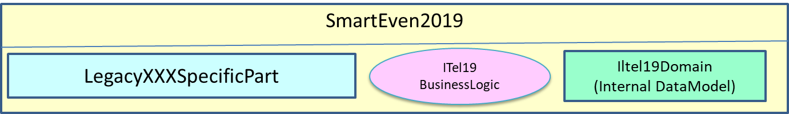
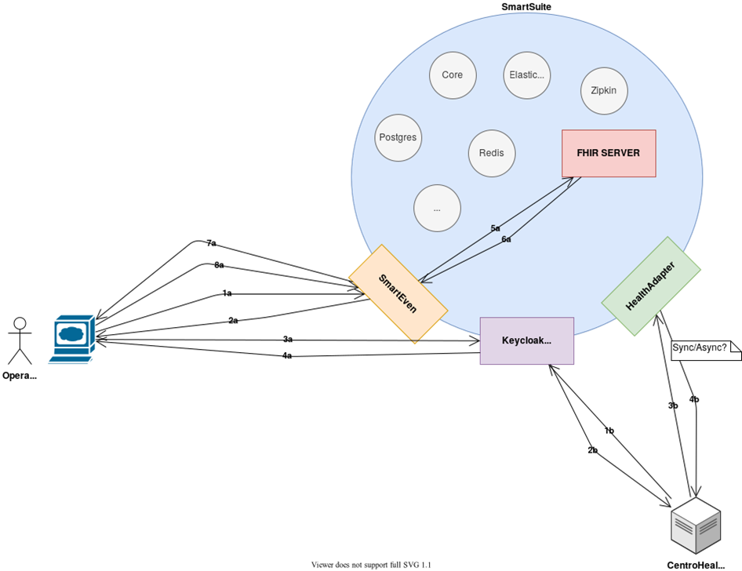
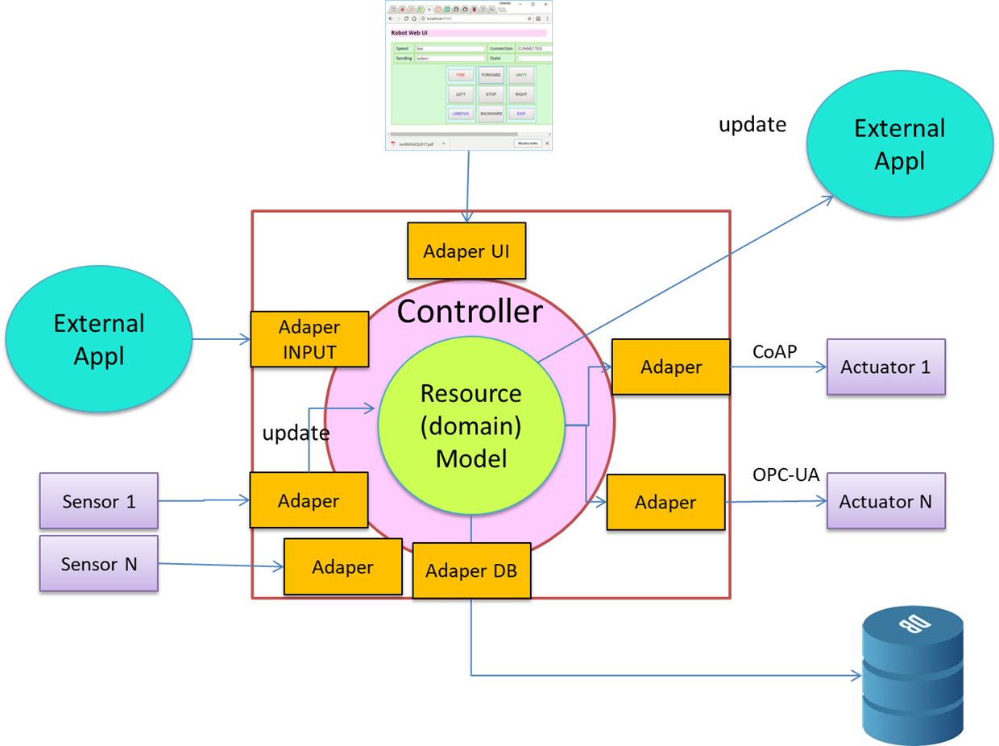
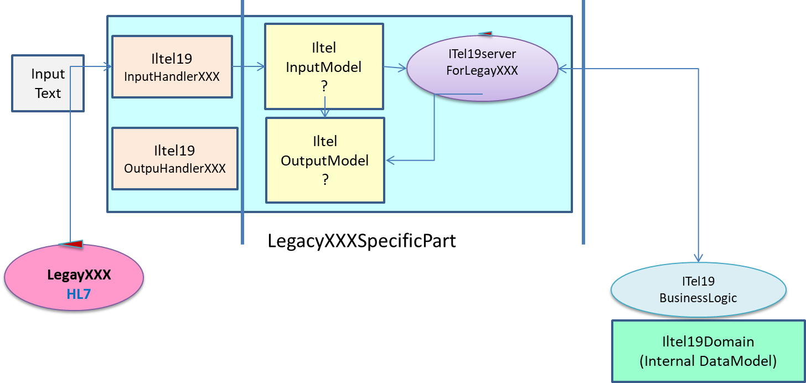

DISI | Working with Existing Legacy Servers
References (
DISIMaterial.html )
Introduzione

|
In questo lavoro ci occupiamo della
interazione tra HealthProduct e un CentroHealth
rappresentato da un server legacy per cui esiste gia' una implementazione realizzata con software ITel19,
con particolare riferimento al case-study:

|
Verifica di possibilita' di riuso
|
Partendo dal principio che
The use cases should be implemented using a
si suppone che la struttura del software ITel19 sia organizato come logicamente rappresentato nella
figura che segue
 e piu' in dettaglio nella figura a fianco. Piu' precisamente, si suppone che ogni implementazione ITel19 sviluppata per un dato centro health abbia una sezione di codice che adatta lo specifico nput/output di quel centro health alla business logic. In particolare, si suppone che esistano parti di software (oggetti) gia' sviluppate e testate che si interfacciano con lo spcifico centro health. Alcune di queste parti dovrebbero trattare i dati di input (ad esempio il CDA HL7v3 presentato nel case-study). |

|
Verso il futuroUn altro modo di vedere lo schema proposto può scaturire dalle idee esposte in The Clean Architecture, con particolare riferimento alle architetture esagonali che pongono il DomainModel al centro del sistema, usando un insieme di adapter come 'collante' con il mondo esterno. |
 |
E' possibile evitare la costruzione di LegacyXXXSpecificParts per ogni (nuovo) centro-health, affrontando il problema in modo
piu' generale e quindi piu' produttivo per la realizzazione di interazioni con un nuovo centro-health NON-FHIR?
|

|
| Traendo ispirazione da Model–view–viewmodel,
la risposta potrebbe consistere nella definizione (
The use cases could be implemented using a
|
 |